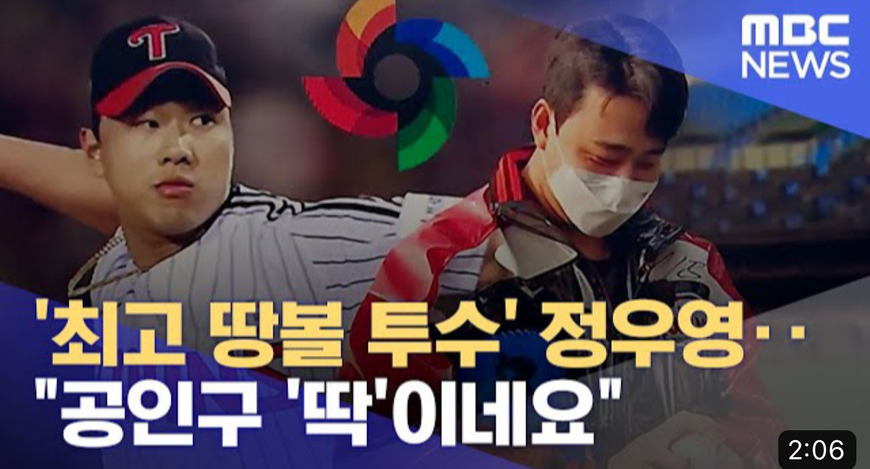

WBC에서 한국은 상당히 유리한 포지션이었습니다.
[한국, 일본, 중국, 호주, 체코]가 B조인데,
한국과 일본을 제외하면 약체라고 분류되는 국가들로
조가 편성이 되었습니다.
심지어 경기시간도 저녁경기 - 다음날 점심경기로 이어지는
경기는 단 한경기도 없습니다. (일본, 미국과 동일)
호주, 중국, 체코는 저녁 - 점심경기 있음.
한국의 계속되는 예선탈락으로 인해
WBC사무국에서 아예 대놓고 밀어준거나 다름없습니다.
그러나 캠프 편성부터가 잘못되었습니다. 왜냐?
대표팀 캠프가 애리조나에 편성됐기 때문입니다.
예선 경기는 일본에서 치뤄짐에도 불구하고
왜 애리조나에서 캠프를 편성했을까?
두가지 이유입니다.
첫째. 이강철 대표팀 감독은 현 KT 위즈의 감독이어서
KT의 캠프인 애리조나 옆에 대표팀 캠프를 차렸습니다.
그로 인해서 바로 옆이 일본임에도
굳이 2번의 시차적응을 겪어가며 애리조나에서 훈련했습니다.
둘째. 그냥 무작정 한국은 예선통과 할 것이라 생각하고
본선이 치뤄지는 미국에서 캠프를 진행했습니다.
물론 여기까지는 뭐 그렇다 치고 넘어갑시다.
깔게 엄청 많습니다.
그래서 왜 멸망했는가?
1. 도저히 이해되지 않는 이강철 감독의 운용
2. 국대 차출에도 불구하고 경기 미참여한 선수들로 본 피해
3. 애초에 "실력"이 떨어져서
저는 이 세가지라고 봅니다.
1. 이강철 감독의 운용부터 짚어보자면
오릭스와 한신 경기는 연습경기니 그렇다 칩니다.
근데? 한국 야구팬들이 인정하는 상위리그인 일본 상대보다
호주상대로 무조건 1승을 챙기는게 당연한건데
호주전을 홀랑 까먹고선 일본전에 총력전을 한다?
이게 말이나 되는건지 이해가 안됩니다.
거기다 말도 안되는 선수 기용으로 점수까지 그냥 헌납합니다.
야구에 괜히 선발과 불펜이 나눠져 있는게 아닌데도
어 큰일났다 하고 선발 끌어다 쓰고.
밥상 못차리는 테이블세터진은 교체없이 쭉 이어가고.
계속 성적 안나오는 선수 타석은 냅뒀지만
홈런 친 선수 타석에 대타 기용하고.
그나마 있는 불펜은 자기 팀 선수는 보호한다고 내지도 않고.
그 결과는? 호주-일본 2연속 패배입니다.
제가 보기엔
호주 - 김광현 65구 꽉 채우고 4일 휴식 들어가면서
8강에 다시 선발, 불펜은 원태인, 정철원, 김원중이
30~49구 투구로 1일 휴식(일본전 자동 투입X)
일본 - 박세웅 선발에 호주전에 불펜 투입이 안된 선수들
모두 29구까지 짧게 투구
체코 - 고영표 선발. 단, 30~49구만 던져서
8강전에 김광현 다음 스페어로 준비(네덜란드나 쿠바 생각해서)
불펜은 호주전에 나왔던 애들 휴식 풀렸으니
29구내로 짧게 끊어가거나 곽빈, 소형준을 30~49구로
중국전 투입 없는셈치고 내보내거나.
중국 - 쉰사람들 전부 투입.
이게 맞지 않았을까? 싶습니다.
2.국대 차출에도 불구하고 경기 미참여한 선수들로 본 피해.
국대 선수들 투구 일지입니다.
여기서 제일 중요한 포인트는 김원중, 정철원, 원태인입니다.
왜냐?
김원중, 정철원은 연습경기 포함 5연투입니다.
모든 경기에 한번도 빠짐없이 출장했습니다.
투구일지에는 41구, 63구로 표시되지만
연습피칭까지 포함하면 90구, 100구는 충분히 넘는다고 봅니다.
김원중 선수는 계속 위기상황에만 분식으로 나왔습니다.
불펜에게 분식이 참 안좋은 상황인데도 5등판 5분식입니다.
정철원 선수는 작년 신인왕 출신인데 5연투로 인해

팔에 불편함을 느끼며
하이파이브조차 왼손으로 했습니다.
선발자원으로 데려온 원태인 선수는 이미 82구를 던졌습니다.
그런데?
예. 중국전에 선발로 나옵니다.
(이강철 감독님의 투수 정하는 법. 추정)
다시 투구일지를 보면 유독 안나오는 선수들이 있습니다.
구창모, 이의리, 양현종, 김윤식 선수.
이 네명의 선수들은 살짝은 이해가 갑니다.
원래 많이 아프기도 하고?(구창모)
잘 못 던지기도 하고?(이의리, 김윤식)
늙어서 힘도 떨어지고?(양현종)
그러나 정우영 선수와 고우석 선수
이 두 선수는 이해가 가질 않네요.
정우영 선수는

분명 공인구가 움직임이 더 좋아질 것 같다고 인터뷰 했었지만
아직까지 공인구 적응이 안돼 등판을 못한다고 합니다.
KBO는 4800만원을 들여 공인구를 사왔는데도 말입니다.
고우석 선수는
병원 검사 결과 이상은 없지만 아직도 아프다고 하셔서
경기에 나오지 않습니다.
그리고 이 두 선수들은 중국전에 나오지 않는다고 합니다.
국가대표가 장난도 아니고 나오지 않을거면
차출거부가 맞지 않나 싶습니다.
아니면 교체라도 했어야 한다고 봅니다.
미국의 브룩스 레일리 선수는 아파서 바로 교체했습니다.
본인들은 똑똑해서 시즌 준비하고
김원중, 정철원, 원태인은 멍청해서
WBC에서 팔갈리는게 아니잖습니까.
진짜 시즌 시작하고서
[WBC는 잊어라, 155km 쾅! 고우석 LG 뒷문 걸어잠그다]
이런 기사 나오면 돌아버릴 것 같습니다.
그리고 이강철 감독님이 참 선수들 아끼는 게 눈에 보입니다.
물론 자팀 선수만..(소형준, 고영표, 강백호, 박병호)
어떤 두 선수 1루에서 빼줘야하니
주포지션 외야인 선수가 1루보고..
어떤 선수는 죽어도 안내고 어떤 선수는 안타 하나 맞으니
후다닥 교체... ㅎㅎ; 참..
3. 애초에 "실력"이 떨어져서
예전 06WBC나 08올림픽 등 성적 좋았을 때 보면
8개구단이었습니다.
물론 8구단이라서 무조건 좋은건 아닙니다만
애초에 구단이 적은 만큼 1군에 올라올 수 있는 선수가
그만큼 적었다는 얘기입니다.


진짜 이게 태명문입니다.
솔직히 더 쓸라면 쓸 수 있겠는데
너무 화나서 더 못쓰겠습니다.
한국 야구 망해라ㅅㅂ
아 이미 망했네ㅋㅋ
후원댓글 11개
댓글 11개 ▼